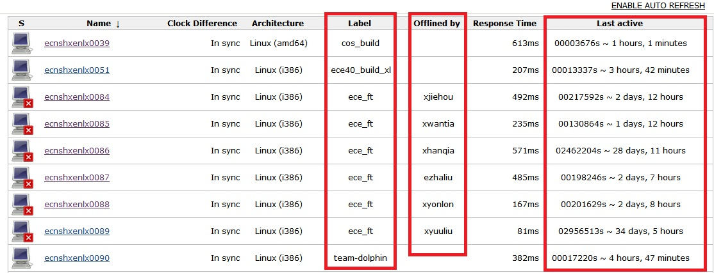

Who is touching my
slave?!
谁动了我的奴隶（误）
Not enough
slaves!
试下回车，输入show me the money，回车
My jobs had pended for
3 hours!
你的哪个Jobs，Stephen Jobs吗？
In a word, we need to manage the slaves!
起来，不愿做slave的server们
Jenkins Resource Monitor v0.618 comes with
one page showing who is occupying which one for what reason.
Mr.Monitor: Hello World
It's a 1 man-hour proto-prototype by using Jenkins RESTFUL API.

No html5, no css, a little bit js
Story does not end...
领导：我最后只说三句
Continuous Improvement
- Sort them by time
- One man one slave
- show me the labels
CI ?= Continuos Integration/Improvement/Inspection/In...
Should be another 1 man-hour fast food, unfortunately there is no RESTFUL API of Labels available
肿么办plug it in
4.5 hour passed...
- 1 hour for maven to download hpi from repository
- 2.5 hours for copy/paste, editing and pre-integration-test
- 1 hour for integration-test

More than Resource Monitor?
- Resource usage rater
- Auto Notifier
- Auto labler
- ...
Story seldom ends...
领导2:我再补充两句
Want to make Jenkins more interesting?
Thursday 5:00pm, 5F ShangHai, Bridge team's sharing
Shang Hai welcome ni
Story never ends...
领导3:我没啥好说的，就提一点
Wanna know how to make this presentation?
- Github impress.js